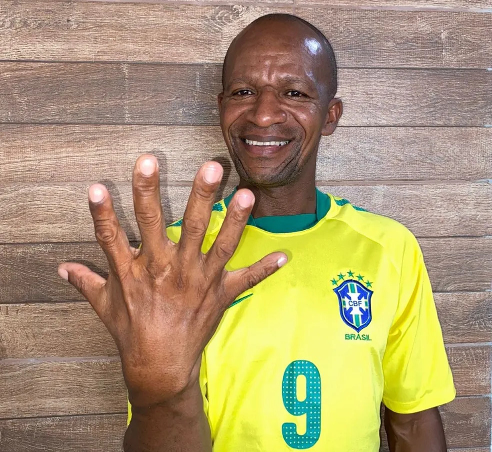

Meu nome é Josevaldo Pereira. Sou uma pessoa dedicada, responsável e comprometida com o aprendizado e o desenvolvimento profissional. Tenho interesse em adquirir novos conhecimentos, desenvolver habilidades na área de tecnologia e buscar oportunidades que contribuam para meu crescimento pessoal e profissional. Valorizo o trabalho em equipe, a criatividade e a capacidade de enfrentar novos desafios.
